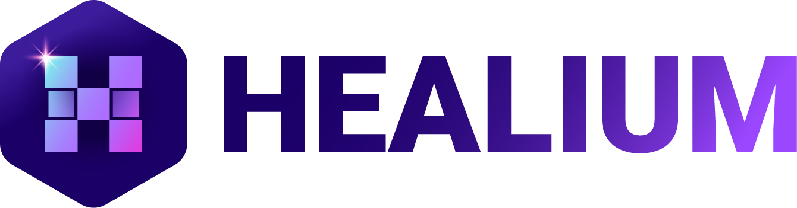
White Paper
White Paper
Version 0.6
English
1. Introduction
'It is myself who knows my body best.' There are still people who think like this, and sometimes people go against medical diagnosis. Although it is my body, can I know of diseases caused by genes?
In a book called 'The Story of Nic Volker', there comes an example of a child who had received more than 100 surgeries because of an intestinal inflammation disease who finally found out the cause of the disease through genome test. This was recorded as the first case in which an incurable disease of unknown cause was cured by genome medicine. We cannot see things that are too big like the universe, nor things that are too small like genes. Human sensory cognitive ability only allows people to obtain partial information about the middle world, which is neither large nor small.
Observing the trends in modern medicine, we can see the three keywords: prevention, customization, and participation. By the way, these three keywords are all related with the medicine which becomes data science. Cases of domestic venture companies that use genome information as advanced medicine show well this phenomenon.
In December 2019, the first COVID-19 patient was identified and since then this disease has spread to throughout the world at a terrific rate. WHO (World Health Organization) declared COVID-19 as pandemic (Pandemic is the highest warning grade for infectious disease declared by WHO). This was the third pandemic declaration of WHO since its foundation. Due to the sudden spread of the infectious disease, all countries around the world, including Korea, fell into confusion.
Because of the fast spread of COVID-19, non-face-to-face service has been developing very rapidly in all areas of life. Many people are also interested in their own health, so, the level of awareness of health care is becoming considerably higher. Therefore, the proportion of non-face-to-face personal health care services and businesses in the Post COVID-19 era is expected to increase.
The expectations for non-face-to-face health care services are growing but the current non-face-to-face health care service platform in Korea is insufficient. According to the survey of 'Public Opinion within Public Opinions, Hankook Research', the' medical 'field was ranked first among the fields that are likely to experience the most difficulties among the online and non-face-to-face services in COVID-19 era. We can say that it is evidence of the need to develop an easy-to-use and user-friendly non-face-to-face healthcare service platform.
In a book called 'The Story of Nic Volker', there comes an example of a child who had received more than 100 surgeries because of an intestinal inflammation disease who finally found out the cause of the disease through genome test. This was recorded as the first case in which an incurable disease of unknown cause was cured by genome medicine. We cannot see things that are too big like the universe, nor things that are too small like genes. Human sensory cognitive ability only allows people to obtain partial information about the middle world, which is neither large nor small.
Observing the trends in modern medicine, we can see the three keywords: prevention, customization, and participation. By the way, these three keywords are all related with the medicine which becomes data science. Cases of domestic venture companies that use genome information as advanced medicine show well this phenomenon.
In December 2019, the first COVID-19 patient was identified and since then this disease has spread to throughout the world at a terrific rate. WHO (World Health Organization) declared COVID-19 as pandemic (Pandemic is the highest warning grade for infectious disease declared by WHO). This was the third pandemic declaration of WHO since its foundation. Due to the sudden spread of the infectious disease, all countries around the world, including Korea, fell into confusion.
Because of the fast spread of COVID-19, non-face-to-face service has been developing very rapidly in all areas of life. Many people are also interested in their own health, so, the level of awareness of health care is becoming considerably higher. Therefore, the proportion of non-face-to-face personal health care services and businesses in the Post COVID-19 era is expected to increase.
The expectations for non-face-to-face health care services are growing but the current non-face-to-face health care service platform in Korea is insufficient. According to the survey of 'Public Opinion within Public Opinions, Hankook Research', the' medical 'field was ranked first among the fields that are likely to experience the most difficulties among the online and non-face-to-face services in COVID-19 era. We can say that it is evidence of the need to develop an easy-to-use and user-friendly non-face-to-face healthcare service platform.
1.1 Health care status
We can divide health care into healthcare 1.0 era, healthcare 2.0 era, and healthcare 3.0 era.
First, the healthcare 1.0 era was from the 18th century to the early 20th century, and the main purpose in this period was to prevent infectious diseases. People focused on identifying the causes of infectious diseases and developing vaccines and treatments to prevent them.
With the beginning of the 20th century, the health care 2.0 era started. As the global economy and the medical industry develop, each country began to have a medical service system, and its main purpose was to treat diseases.
During the healthcare 3.0 era that started after the 21st century, the focus changed from ‘disease treatment’ in the existing health care 2.0 era to ‘disease prevention’ and ‘health management’. This means a change from reactive and ex post facto health care to predictive and preventive health care, and the characteristics of personalized medicine and participatory medicine depending on individual characteristics are emphasized. Also, as mentioned earlier, the change to a non-face-to-face society is accelerating due to the COVID-19 pandemic. Therefore, the medical industry is also showing a change from the existing diagnosis, treatment, and hospital-centered health care to a non-face-to-face, consumer-centered health care based on digital technology. This indicates that the medical industry will develop with the active participation of active individuals.
The biggest feature of digital healthcare is that people can receive health care anytime, anywhere by using various advanced information and communication technologies. The latest ICT technologies such as artificial intelligence, the Internet of Things, wearable devices, smartphones, and cloud computing are rapidly and widely applied to the medical system. In the case of the smart health care industry, each government around the world including the US, Europe, Japan, and China, as well as Korea, is planning and promoting industrial promotion measures, and this industry is the largest and fastest growing market among the ICT convergence markets. According to market research firm ‘Markets and Markets’ (MnM), the global digital health market is expected to reach $392 billion in 2024, growing at an average annual rate of 15.5% from $169.7 billion in 2018. The size of the domestic digital health market grew from 3 trillion won in 2014 to 14 trillion won in 2020, increasing at an average annual rate of 12.5%.
As the healthcare market grows, services such as hospitals, beauty salons, fitness, pharmacies also develop. However, many people feel uncomfortable to use them.
For example, consumers may experience inconvenience in the process of selecting a health service such as a hospital treatment. The information required to select a hospital is insufficient and it is difficult to find a hospital that specializes in a specific disease. There are also a lot of unknown and inaccurate information and advertisements mixed up online, which hinders the rational choice of consumers. Due to the vast amount of data, it is difficult to choose the right product or information.
Furthermore, the scale of overseas medical tourism is gradually increasing along with globalization, but the solution to the payment problem is still unresolved. Korea has a bigger healthcare market than many other countries and many foreigners visit Korea to use medica service. Many foreigners plan medical tourism to benefit from Korea's excellent medical technology. However, when they use Korean medical services, they experience many problems such as currency exchange, overseas remittance, etc.
First, the healthcare 1.0 era was from the 18th century to the early 20th century, and the main purpose in this period was to prevent infectious diseases. People focused on identifying the causes of infectious diseases and developing vaccines and treatments to prevent them.
With the beginning of the 20th century, the health care 2.0 era started. As the global economy and the medical industry develop, each country began to have a medical service system, and its main purpose was to treat diseases.
During the healthcare 3.0 era that started after the 21st century, the focus changed from ‘disease treatment’ in the existing health care 2.0 era to ‘disease prevention’ and ‘health management’. This means a change from reactive and ex post facto health care to predictive and preventive health care, and the characteristics of personalized medicine and participatory medicine depending on individual characteristics are emphasized. Also, as mentioned earlier, the change to a non-face-to-face society is accelerating due to the COVID-19 pandemic. Therefore, the medical industry is also showing a change from the existing diagnosis, treatment, and hospital-centered health care to a non-face-to-face, consumer-centered health care based on digital technology. This indicates that the medical industry will develop with the active participation of active individuals.
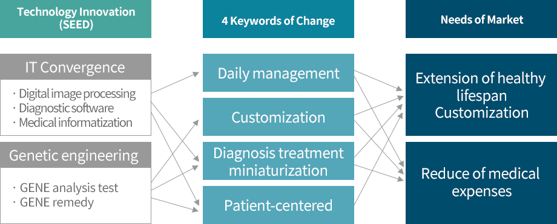Figure 1. Health care 3.0 era
'Data' emerges as an important element in the healthcare paradigm shift that pursues disease prevention and health promotion. And it is essential to combine medical services with digital technology to collect, store and analyze data. A new industry that combines medical services, digital technology, and ICT is called ‘digital health’ or ‘digital healthcare’, which is to develop traditional treatment in hospital space into an intelligent medical solution that people can enjoy regardless of time and space.The biggest feature of digital healthcare is that people can receive health care anytime, anywhere by using various advanced information and communication technologies. The latest ICT technologies such as artificial intelligence, the Internet of Things, wearable devices, smartphones, and cloud computing are rapidly and widely applied to the medical system. In the case of the smart health care industry, each government around the world including the US, Europe, Japan, and China, as well as Korea, is planning and promoting industrial promotion measures, and this industry is the largest and fastest growing market among the ICT convergence markets. According to market research firm ‘Markets and Markets’ (MnM), the global digital health market is expected to reach $392 billion in 2024, growing at an average annual rate of 15.5% from $169.7 billion in 2018. The size of the domestic digital health market grew from 3 trillion won in 2014 to 14 trillion won in 2020, increasing at an average annual rate of 12.5%.
As the healthcare market grows, services such as hospitals, beauty salons, fitness, pharmacies also develop. However, many people feel uncomfortable to use them.
For example, consumers may experience inconvenience in the process of selecting a health service such as a hospital treatment. The information required to select a hospital is insufficient and it is difficult to find a hospital that specializes in a specific disease. There are also a lot of unknown and inaccurate information and advertisements mixed up online, which hinders the rational choice of consumers. Due to the vast amount of data, it is difficult to choose the right product or information.
Furthermore, the scale of overseas medical tourism is gradually increasing along with globalization, but the solution to the payment problem is still unresolved. Korea has a bigger healthcare market than many other countries and many foreigners visit Korea to use medica service. Many foreigners plan medical tourism to benefit from Korea's excellent medical technology. However, when they use Korean medical services, they experience many problems such as currency exchange, overseas remittance, etc.
1.2 Problems of the current medical information system
There is a situation that anyone who has used a hospital has experienced at least once. If you go to another hospital after receiving treatment in one hospital, you may experience the repetition of the test or Scan that you have already received from the previous hospital. The reason why the interview and test that have already been done are repeated at another hospital is that the information that has already been written has not been delivered to the new hospital. Like this the reason why medical information is not being exchanged effectively is that most current medical information systems have medical information management systems centered on medical institutions, and there are also government regulations because medical information is very important personal information.
In the current medical institution-centered management system, the reliability of medical data is not secure, and the transparency of data use is low, and the risk for data loss or hacking is also large. Under such a system, it is difficult for individuals to independently utilize their medical information, the reliability of data is inevitably low, and they must always carry the fear of personal information leakage. The number of medical data hacking cases is increasing every year. In 2015, the number of hacked medical records exceeded 112 million in the United States alone and the damage caused by it has been reported to exceed 6.2 billion dollars annually (approximately 7 trillion won).
Healthcare providers cannot easily obtain patient's past information due to the absence of medical information exchange, so, they cannot provide the best medical treatment and must do unnecessary tests repeatedly, resulting in side effects that increase patient's medical costs and burden. There are sometimes cases that medical records are often falsely entered or changed arbitrarily by healthcare providers, which becomes a social problem, but the current medical information system does not have a solution that can systematically control them.
In the current medical institution-centered management system, the reliability of medical data is not secure, and the transparency of data use is low, and the risk for data loss or hacking is also large. Under such a system, it is difficult for individuals to independently utilize their medical information, the reliability of data is inevitably low, and they must always carry the fear of personal information leakage. The number of medical data hacking cases is increasing every year. In 2015, the number of hacked medical records exceeded 112 million in the United States alone and the damage caused by it has been reported to exceed 6.2 billion dollars annually (approximately 7 trillion won).
Healthcare providers cannot easily obtain patient's past information due to the absence of medical information exchange, so, they cannot provide the best medical treatment and must do unnecessary tests repeatedly, resulting in side effects that increase patient's medical costs and burden. There are sometimes cases that medical records are often falsely entered or changed arbitrarily by healthcare providers, which becomes a social problem, but the current medical information system does not have a solution that can systematically control them.
1.3 Features of blockchain technology
In 2009, blockchain 1.0 era began with the birth of Bitcoin. Since then, we have experienced blockchain 2.0 era represented by Ethereum and then blockchain 3.0 era in which about 4,000 cryptocurrencies are circulating. Numerous accidents have followed with the development of blockchain. Nevertheless, it cannot be denied that blockchain is a key technology in the era of the 4th Industrial Revolution. The 4th Industrial Revolution is an era of technological convergence based on the digital revolution and it aims to become a society where everything is connected including people, things, space, etc. Blockchain is expected to provide efficiency and reliability to all industries and technology sectors by playing a key role in the 4th Industrial Revolution.
Blockchain is an information processing technology that distributes and stores data in the unit of 'block'. It has the characteristics of having the integrity and reliability of the transaction record without the intervention of third party. It distributes the transaction data in the form of a block based on P2P (peer to peer, individual and individual transactions), and stores it in the form of chains.
HEALIUM manages data more securely by introducing blockchain and separating from personal information when storing gene information analysis results. Through this, we will establish a system that gives tokens as a reward by creating a system that allows individuals to select and manage data use agreement for gene analysis results.
The features of the blockchain can be divided largely into six categories.
Blockchain has an irreversible and decentralized data storage method without central institutions such as companies, governments or banks. In other words, all data is distributed and stored to users of the system, so that all users become the subject of the transaction, and suppliers and consumers are directly connected and transacted without any intermediary.
Blocks containing transaction details are distributed and stored to the participants. It means that all participants have the same transaction ledger. When someone intends to forge or modify data, he/she needs to manipulate the data of all network participants.
The hash value determines the connection between blocks in the blockchain. The next block has the hash value of the previous block. In this case, the hash value is a unique value for each block. So, changing one value in a block will result in a completely different hash value.
Blockchain is transparent and open to anyone. All users have the entire transaction history on the network, so, all users must compare and verify the ledgers to check transaction history.
It has a distributed network structure, so some system errors do not affect the entire network.
The advantage of storing genetic test data in the blockchain is that we can use it safely by strengthening security and constructing an ecosystem. Genetic test data is very sensitive information for individuals, and it is statistically significant information that must be kept safe, so it is desirable to open and is used for various fields. HEALIUM would like to solve these problems that look like a contradiction and to create a stable platform for the management of gene test results. In addition, we try to create an ecosystem that pursues smooth connection among individuals, medical institutions, and data utilization institutions.
Blockchain is an information processing technology that distributes and stores data in the unit of 'block'. It has the characteristics of having the integrity and reliability of the transaction record without the intervention of third party. It distributes the transaction data in the form of a block based on P2P (peer to peer, individual and individual transactions), and stores it in the form of chains.
HEALIUM manages data more securely by introducing blockchain and separating from personal information when storing gene information analysis results. Through this, we will establish a system that gives tokens as a reward by creating a system that allows individuals to select and manage data use agreement for gene analysis results.
The features of the blockchain can be divided largely into six categories.
Decentralization
Blockchain has an irreversible and decentralized data storage method without central institutions such as companies, governments or banks. In other words, all data is distributed and stored to users of the system, so that all users become the subject of the transaction, and suppliers and consumers are directly connected and transacted without any intermediary.
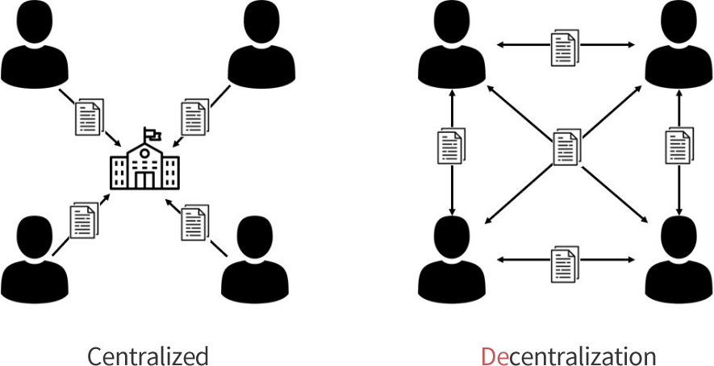Figure 2. Centralization and decentralization
Security
Blocks containing transaction details are distributed and stored to the participants. It means that all participants have the same transaction ledger. When someone intends to forge or modify data, he/she needs to manipulate the data of all network participants.
Integrity
The hash value determines the connection between blocks in the blockchain. The next block has the hash value of the previous block. In this case, the hash value is a unique value for each block. So, changing one value in a block will result in a completely different hash value.
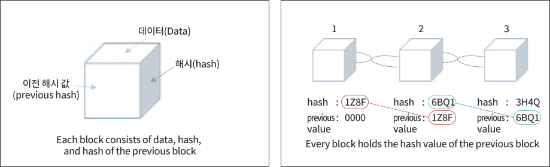Figure 3. Hash value
Transparency
Blockchain is transparent and open to anyone. All users have the entire transaction history on the network, so, all users must compare and verify the ledgers to check transaction history.
Stability
It has a distributed network structure, so some system errors do not affect the entire network.
1.4 Birth of HEALIUM coin
HEALIUM intends to build a digital healthcare system by creating a platform that promotes non-face-to-face healthcare services, personalized medical services, and consumers' participation in line with health care 3.0 era.information can be widely used from general hospital treatment to personalized-mobile health care services.
'Healthcare' has become a trend due to the prolonged COVID-19. We provide personalized healthcare services in line with the Post COVID-19 era, take the initiative in promoting the health of all mankind, and pursue public interest for our society and humanity.information can be widely used from general hospital treatment to personalized-mobile health care services.
With HEALIUM coin, we enhance accessibility and reliability by combining our business with blockchain, the key infrastructure of the 4th industrial revolution and enabling transparent management and supervision. Through the HEALIUM platform, we build an integrated medical information system centered on consumers that could not be achieved with the existing system. That is, everyone can freely exchange healthcare information with each other, receive high-quality personalized healthcare services, and enjoy more convenient and secure healthcare benefits.information can be widely used from general hospital treatment to personalized-mobile health care services.
HEALIUM paradoxically achieves data integration using blockchain which symbolizes decentralization. It can integrate medical records created by medical institutions as well as medical data created by patients. It is possible to easily store not only the data of the devices that generate various medical information outside the medical institution, but also the data made by individuals. The integrated and stored medical information can be widely used from general hospital treatment to personalized-mobile health care services.
'Healthcare' has become a trend due to the prolonged COVID-19. We provide personalized healthcare services in line with the Post COVID-19 era, take the initiative in promoting the health of all mankind, and pursue public interest for our society and humanity.information can be widely used from general hospital treatment to personalized-mobile health care services.
With HEALIUM coin, we enhance accessibility and reliability by combining our business with blockchain, the key infrastructure of the 4th industrial revolution and enabling transparent management and supervision. Through the HEALIUM platform, we build an integrated medical information system centered on consumers that could not be achieved with the existing system. That is, everyone can freely exchange healthcare information with each other, receive high-quality personalized healthcare services, and enjoy more convenient and secure healthcare benefits.information can be widely used from general hospital treatment to personalized-mobile health care services.
HEALIUM paradoxically achieves data integration using blockchain which symbolizes decentralization. It can integrate medical records created by medical institutions as well as medical data created by patients. It is possible to easily store not only the data of the devices that generate various medical information outside the medical institution, but also the data made by individuals. The integrated and stored medical information can be widely used from general hospital treatment to personalized-mobile health care services.
2. Features of HEALIUM coin
2.1 Purpose of HEALIUM coin
Currently, cryptocurrencies in the market can solve only one or two issues of the blockchain trilemma (decentralization, security, and scalability), and it is said that satisfying all three issues at the same time is physically impossible.
SOLANA chain optimally maintains and develops decentralization and security, and at the same time overcomes trilemma, the biggest challenge in the blockchain industry, based on the highest scalability. It has dramatically improved the items such as security and user accessibility compared to the existing blockchain platform.
HEALIUM coin aims to build a platform and ecosystem that reliably and safely stores and manages genetic test data by securing the blockchain source technology. Genetic test data is very sensitive and statistically useful information for an individual. Therefore, it must be safely managed and used effectively. To solve these two problems, HEALIUM intends to develop a genetic test data management platform by introducing blockchain. HEALIUM coin has the purpose of pursuing all the benefits of both individuals and statistical data utilization agencies through this platform, and composing a convenient and secure ecosystem.
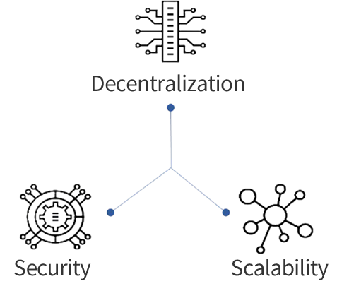
Figure 4. The trilemma of blockchain technology
Figure 4. The trilemma of blockchain technology
SOLANA chain optimally maintains and develops decentralization and security, and at the same time overcomes trilemma, the biggest challenge in the blockchain industry, based on the highest scalability. It has dramatically improved the items such as security and user accessibility compared to the existing blockchain platform.
HEALIUM coin aims to build a platform and ecosystem that reliably and safely stores and manages genetic test data by securing the blockchain source technology. Genetic test data is very sensitive and statistically useful information for an individual. Therefore, it must be safely managed and used effectively. To solve these two problems, HEALIUM intends to develop a genetic test data management platform by introducing blockchain. HEALIUM coin has the purpose of pursuing all the benefits of both individuals and statistical data utilization agencies through this platform, and composing a convenient and secure ecosystem.
2.1.1 Use of HEALIUM Coin (Genomic India Project)
Establishment of a blockchain-based medical information open platform that safely collects and manages medical information, including diagnostic results of uninfected specimens scattered in various institutions, and all medical information produced through various devices such as mobile phones.
We have overcome the limitation of DTC Genetic testing being currently illegal in Korea. We provide a GENOME INDIA policy platform in which the central government of India and a total of 22 national and public institutions participate. Healthcare consumers can exercise the right to own, manage and control their information medical providers may record medical information with consumer consent or obtain it for purposes such as research
The virtual asset HEALIUMCOIN used in the platform is a means given as a reward according to the contribution to information formation and provision. Not only consumers but also medical providers who contributed to the production of medical information can be compensated according to their contribution.
HEALIUM COIN can be used as a means of payment for various expenses such as medical expenses, pharmaceutical expenses, and insurance premiums at various institutions connected with HEALIUM. HEALIUM starts from the philosophy that the problems of the medical information system can be solved with blockchain.
It is for this reason that the HEALIUM project group is preparing a blockchain-based incurable disease sample diagnosis and simple insurance claim service as its main business in India. India's HEALIUM PASS, which will be released in the first quarter of 2022, will enable sample collection and insurance claims through a one-stop visit service.
We have overcome the limitation of DTC Genetic testing being currently illegal in Korea. We provide a GENOME INDIA policy platform in which the central government of India and a total of 22 national and public institutions participate. Healthcare consumers can exercise the right to own, manage and control their information medical providers may record medical information with consumer consent or obtain it for purposes such as research
The virtual asset HEALIUMCOIN used in the platform is a means given as a reward according to the contribution to information formation and provision. Not only consumers but also medical providers who contributed to the production of medical information can be compensated according to their contribution.
HEALIUM COIN can be used as a means of payment for various expenses such as medical expenses, pharmaceutical expenses, and insurance premiums at various institutions connected with HEALIUM. HEALIUM starts from the philosophy that the problems of the medical information system can be solved with blockchain.
△ Record in free text without overly technical medical terminology
△ Notepad document record UA/UI system application
△ Resolving problems such as slow speed and low security technology
△ Resolving the problem that medical records are scattered and disclosed across multiple medical institutions
△ Resolving the problem of limited exchange of medical information between multiple medical institutions
△Resolving inconveniences such as frequent issuance of various medical documents and re-treatment.
△Resolving inconveniences such as frequent issuance of various medical documents and re-treatment.
△ Realization of interworking of sample diagnosis results and medical-health data.
△Realization of remote-based customized healthcare based on sample diagnosis results
△ Resolving the problem of false insurance claims(Korean Financial Services Commission, annual insurance fraud detection amount of KRW 898.6 billion, false/excessive accident KRW 591.4 billion)
△ Notepad document record UA/UI system application
△ Resolving problems such as slow speed and low security technology
△ Resolving the problem that medical records are scattered and disclosed across multiple medical institutions
△ Resolving the problem of limited exchange of medical information between multiple medical institutions
△Resolving inconveniences such as frequent issuance of various medical documents and re-treatment.
△Resolving inconveniences such as frequent issuance of various medical documents and re-treatment.
△ Realization of interworking of sample diagnosis results and medical-health data.
△Realization of remote-based customized healthcare based on sample diagnosis results
△ Resolving the problem of false insurance claims(Korean Financial Services Commission, annual insurance fraud detection amount of KRW 898.6 billion, false/excessive accident KRW 591.4 billion)
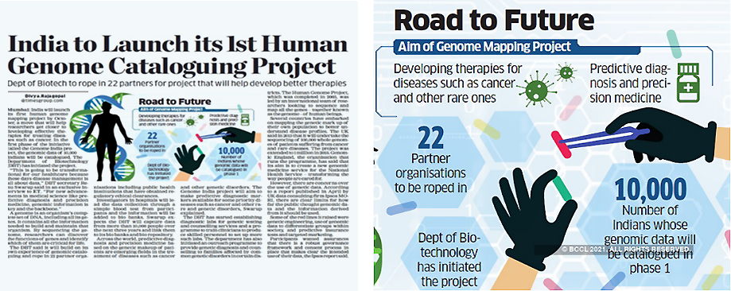
Figure 5 Human Genome Project in India
Figure 5 Human Genome Project in India
It is for this reason that the HEALIUM project group is preparing a blockchain-based incurable disease sample diagnosis and simple insurance claim service as its main business in India. India's HEALIUM PASS, which will be released in the first quarter of 2022, will enable sample collection and insurance claims through a one-stop visit service.
2.2 Blockchain application scope
HEALIUM coin ecosystem platform introduces blockchain to play the following roles.
1) It saves genetic test results obtained through genetic test.
2) It serves as a server that provides data on an individual's genetic test results when requested.
However, it does not store the personal information of a specific person in the blockchain.
It just create a hash value that can be verified through personal information and secure connectivity through checking authority.
3) It provides statistics on genetic test results.
2) It serves as a server that provides data on an individual's genetic test results when requested.
However, it does not store the personal information of a specific person in the blockchain.
It just create a hash value that can be verified through personal information and secure connectivity through checking authority.
3) It provides statistics on genetic test results.
2.3 Personal information verification process
We provide the personal information verification process in the following order so that people can use safely the data contained in the blockchain using the app that we will provide.
1) We store the tester's private key and hash value related to the test record in the app.
2) We request to store the tester's public key and test record hash value in the blockchain.
3) We convert the tester’s public key and the test record hash value to the QR code and store it in the app.
4) We allow users to see, share, and utilize the test results in their apps.
2) We request to store the tester's public key and test record hash value in the blockchain.
3) We convert the tester’s public key and the test record hash value to the QR code and store it in the app.
4) We allow users to see, share, and utilize the test results in their apps.
2.4 Data utilization and reward system
The ecosystem of HEALIUM coin is composed when the genetic test result data is used as following.
HEALIUM provides a market platform within the application by making an agreement with various product sellers. Thus, consumers can purchase personalized products that are recommended by genetic test results with HEALIUM coins in the market through HEALIUM application.
1) Users see their genetic test results.
Users see analyzed data results in the form of reports stored in the blockchain through the app.
Users request data safely on the blockchain using the private key and the test history hash value stored in the app.
2) Users share their genetic test results with others.
The one who has undergone a test only needs to grant the share permissions to the person (the doctor in charge, family member) who will receive the test results in the app.
In this case, those who receive the sharing data must use the app and can request the sharing data by providing their user ID.
The sharing process will utilize the form in which transfers occur in the blockchain.
In other words, the effect of sharing data appears by transmitting the test record hash value to the wallet address of the person who will receive the sharing data from the tester's wallet address.
3) You can consent to the use of your own genetic test results.
If you agree to the use of genetic test results, you will receive HEALIUM coins as a reward for providing information. In this case, personally identifiable information is not used at all, and only limited information about age, gender, and region that can be used for statistics that is provided.
4) Data-using institutions can utilize genetic test result statistics.
You can receive information about statistics using HEALIUM coins.
It aims to provide search functions and statistics that is well classified and have high availability. For this purpose, it uses blockchain that is specialized in statistical processing.
Users see analyzed data results in the form of reports stored in the blockchain through the app.
Users request data safely on the blockchain using the private key and the test history hash value stored in the app.
2) Users share their genetic test results with others.
The one who has undergone a test only needs to grant the share permissions to the person (the doctor in charge, family member) who will receive the test results in the app.
In this case, those who receive the sharing data must use the app and can request the sharing data by providing their user ID.
The sharing process will utilize the form in which transfers occur in the blockchain.
In other words, the effect of sharing data appears by transmitting the test record hash value to the wallet address of the person who will receive the sharing data from the tester's wallet address.
3) You can consent to the use of your own genetic test results.
If you agree to the use of genetic test results, you will receive HEALIUM coins as a reward for providing information. In this case, personally identifiable information is not used at all, and only limited information about age, gender, and region that can be used for statistics that is provided.
4) Data-using institutions can utilize genetic test result statistics.
You can receive information about statistics using HEALIUM coins.
It aims to provide search functions and statistics that is well classified and have high availability. For this purpose, it uses blockchain that is specialized in statistical processing.
3. Ecosystem construction of HEALIUM coin
3.1 Genetic test
3.1.1 Genetic test market
With the advent of the healthcare 3.0 era, the healthcare flow has changed from therapeutic healthcare after the onset of a disease to preventive health care. In addition, people's interest in health care and disease prevention is increasing. Everyone has a different risk of disease, so it is necessary to perform individual genetic analysis to predict and prevent diseases.
According to the 'Status and Prospects of Global Genetic Test Market' report published by the Biotechnology Policy Research Center, the genetic test market is expected to grow up to 10% or more annually. This market is expected to grow nearly 2 times more from $ 6.424 million (about 7,779.5 billion won) in 2018 to $ 11.79 billion (about 14,278.7 billion won) in 2024.
We plan to provide DTC (Direct to Consumer) genetic test service in line with the rapidly growing global genetic test market trend. DTC genetic test service refers to a service that a genetic test institution sells genetic test services directly to consumers without a medical institution and notifies the test results. DTC genetic test could help people become more health conscious by providing personalized information about health, disease risk or other traits. It has the advantage that it is easy to collect DNA samples and consumers can receive the results quickly.
We analyze individual genetic traits through single nucleotide polymorphism (SNP). SNP usually appear in the genome at a rate of one for every 1,000 nucleotide sequences, resulting in individual genetic diversity. Each person may have A (adenine), T (thymine), C (cytosine) or G (guanine). This difference makes genetic diversity and causes genetic diseases.
We can analyze mutation. People can repair their damaged DNA or remove cells with damaged DNA using their own immunity. However, if the DNA repair function and immunity are lowered due to lifestyle, old age, etc., cells with the mutant DNA may remain without being removed.
We put together the genetic test results and provide the results by dividing them into two categories: Health and Beauty. We can know the diseases likely to occur due to genetic factors in the health results and the genetic traits such as skin aging and hair loss in the beauty results. In addition, we not only inform the risk factors, but provide care services such as personalized lifestyle guides, nutritional analysis diets, and customized cosmetic recommendations. You can even order, purchase, and order customized products on the Healium platform.
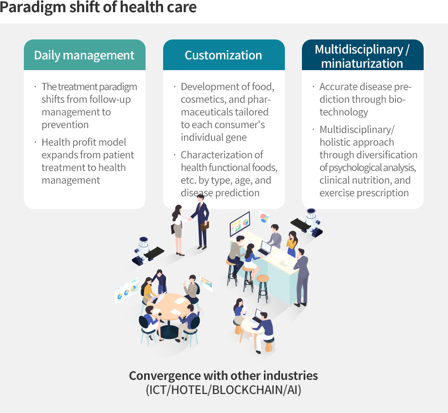
Figure 6. Changes in the health care paradigm
Figure 6. Changes in the health care paradigm
According to the 'Status and Prospects of Global Genetic Test Market' report published by the Biotechnology Policy Research Center, the genetic test market is expected to grow up to 10% or more annually. This market is expected to grow nearly 2 times more from $ 6.424 million (about 7,779.5 billion won) in 2018 to $ 11.79 billion (about 14,278.7 billion won) in 2024.
We plan to provide DTC (Direct to Consumer) genetic test service in line with the rapidly growing global genetic test market trend. DTC genetic test service refers to a service that a genetic test institution sells genetic test services directly to consumers without a medical institution and notifies the test results. DTC genetic test could help people become more health conscious by providing personalized information about health, disease risk or other traits. It has the advantage that it is easy to collect DNA samples and consumers can receive the results quickly.
We analyze individual genetic traits through single nucleotide polymorphism (SNP). SNP usually appear in the genome at a rate of one for every 1,000 nucleotide sequences, resulting in individual genetic diversity. Each person may have A (adenine), T (thymine), C (cytosine) or G (guanine). This difference makes genetic diversity and causes genetic diseases.
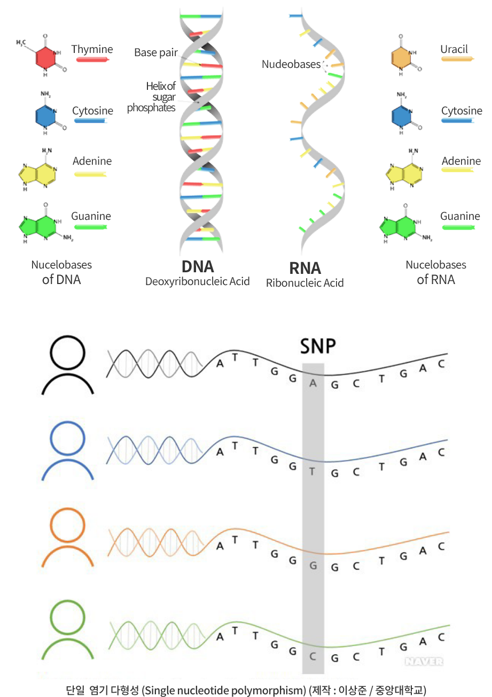
Figure 7. < DNA & RNA double helix structure and base>
Picture 14. Single-nucleotide polymorphism
(Source: Naver, Lee Sang-Jun /Chung-Ang University)
Figure 7. < DNA & RNA double helix structure and base>
Picture 14. Single-nucleotide polymorphism
(Source: Naver, Lee Sang-Jun /Chung-Ang University)
We can analyze mutation. People can repair their damaged DNA or remove cells with damaged DNA using their own immunity. However, if the DNA repair function and immunity are lowered due to lifestyle, old age, etc., cells with the mutant DNA may remain without being removed.
We put together the genetic test results and provide the results by dividing them into two categories: Health and Beauty. We can know the diseases likely to occur due to genetic factors in the health results and the genetic traits such as skin aging and hair loss in the beauty results. In addition, we not only inform the risk factors, but provide care services such as personalized lifestyle guides, nutritional analysis diets, and customized cosmetic recommendations. You can even order, purchase, and order customized products on the Healium platform.
3.1.4 Pan-Brain Health & Mental Health Disease Test (Genetic Test + Psychological Test)
This is a program that comprehensively diagnoses and treats disorders or symptoms related to neurodevelopment and neuropsychology. It targets brain and nerve disorders such as epilepsy, dementia, schizophrenia & autism spectrum, and attention deficit hyperactivity disorder (ADHD). We perform genetic test and psychological test together to determine the cause of symptoms (congenital/acquired) and the quantitative/qualitative degree. In addition, we can maximize the treatment effect by performing individual customized treatment depending on the cause.
Currently, a western medical approach and a psychological approach to diagnosis of mental health are conducted separately, but in the case of the above diagnosis and treatment program, it is possible to perform an integrated approach and diagnosis. Unlike physical health we need to conduct quantitative and qualitative tests together to diagnose accurately and treat appropriately mental health. Furthermore, depending on the intervention made in the early stage of disorder, the difference in adaptation and rehabilitation of patients is big, so the appropriate intervention is essential right after the development of the disease and the mental disease test must be conducted early.
We put together genetic test results, and provide result sheets by dividing them into health, beauty, cancer, and mental disorders. We can see the diseases that can develop due to gene elements through health results, and we can also see genetic traits such as skin aging, hair loss through beauty results. You can do a comprehensive cancer health test using genes as we provide a probability of onset over various cancers through cancer results. Through mental disorder test, we identify and inform early the incidence of congenital diseases that are inherited from parents, such as epilepsy, dementia, schizophrenia & autistic spectrum, ADHD (attention deficit hyperactivity disorders), etc. In addition, we not only perform genetic test, but also provide services such as customized lifestyle guides, recommended diets considering nutrients, and customized cosmetics recommendations. You can also order and purchase customized products directly within the platform.
Currently, a western medical approach and a psychological approach to diagnosis of mental health are conducted separately, but in the case of the above diagnosis and treatment program, it is possible to perform an integrated approach and diagnosis. Unlike physical health we need to conduct quantitative and qualitative tests together to diagnose accurately and treat appropriately mental health. Furthermore, depending on the intervention made in the early stage of disorder, the difference in adaptation and rehabilitation of patients is big, so the appropriate intervention is essential right after the development of the disease and the mental disease test must be conducted early.
We put together genetic test results, and provide result sheets by dividing them into health, beauty, cancer, and mental disorders. We can see the diseases that can develop due to gene elements through health results, and we can also see genetic traits such as skin aging, hair loss through beauty results. You can do a comprehensive cancer health test using genes as we provide a probability of onset over various cancers through cancer results. Through mental disorder test, we identify and inform early the incidence of congenital diseases that are inherited from parents, such as epilepsy, dementia, schizophrenia & autistic spectrum, ADHD (attention deficit hyperactivity disorders), etc. In addition, we not only perform genetic test, but also provide services such as customized lifestyle guides, recommended diets considering nutrients, and customized cosmetics recommendations. You can also order and purchase customized products directly within the platform.
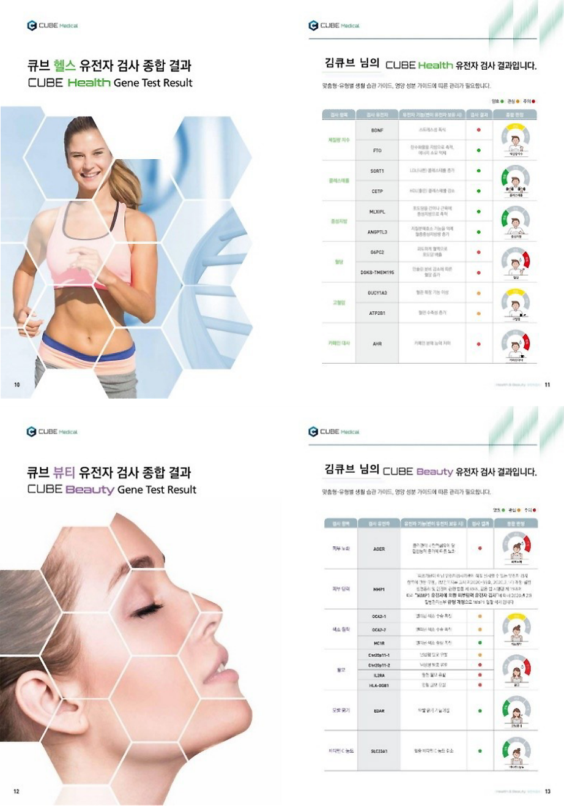
Figure 8. Example of cube genetic test result sheet
Figure 8. Example of cube genetic test result sheet
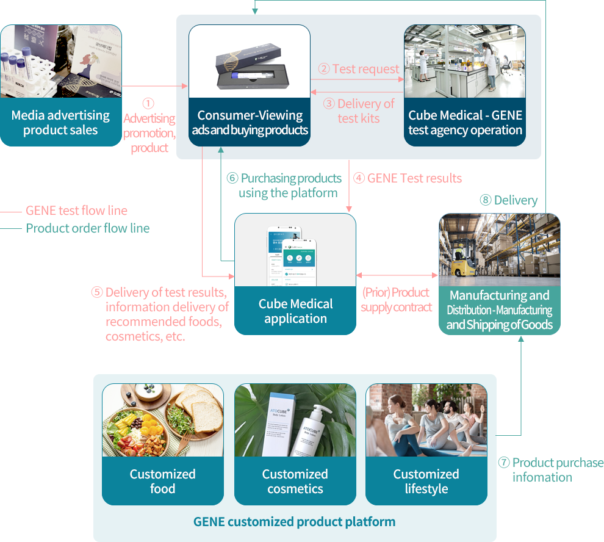
Figure 9. Schematization of genetic testing process
Figure 9. Schematization of genetic testing process
3.2 Functional medicine test
3.2.1 Features of functional medicine test
If it is outside the reference range specified for diagnosing a disease, it is judged that there is a disease, but even if there is a symptom, if it is within the reference range, it is judged that there is no disease. Functional medicine establishes the optimal range of the standard of health, and if it is outside of the range, it is diagnosed as mild disease.
- The need for functional medicine test
In the case of general health checkup, it examines and treats only simple symptoms, so if there are various functional problems related to degenerative diseases, harmful environments, and life imbalances, it is not easy to find out the cause or treat them clearly. It is also difficult to correct a patient's lifestyle with a short treatment time. In addition, there is a lack of special examinations other than the existing examination items, it is because there are no test items to understand the root of diseases except general examination items. Functional medicine test diagnoses patients by linking internal and external diagnostic tests with functional medical tests and it identifies the causes of many modern chronic diseases. This test can analyze symptoms of unknown diseases using noninvasive samples such as hair, saliva, and urine. Furthermore, it can analyze the functional state such as metabolism, nutrition, detoxification, and immunity as well as imbalance.
- Organic acid test : A snapshot of human metabolism that analyzes neurotransmitters, metabolic processes, toxin accumulation, detoxification and intestinal bacteria balance through energy metabolism and nutritional imbalance analysis.
- Salivary hormone test: Analyze chronic stress and hormonal status by measuring adrenal hormones in saliva.
- Fatty acid metabolism test: Balance analysis of fatty acids required for metabolism, including cell membrane, neurology, hormone generation, vitamin absorption, etc.
- Oxidative stress test: Evaluation of the degree of oxidative stress that causes imbalance due to overproduction of oxidizing substances in the body or lack of antioxidants by measuring the number of free radicals and antioxidant power
- Hair heavy metals and minerals test: Analysis and measurement of the degree of contamination of toxic elements such as mercury, lead, aluminum, arsenic, and cadmium and the metabolism of minerals necessary for bodily functions using hair.
- Food allergy: Measurement of IgG antibodies to foods that cause delayed-type hypersensitivity reactions that appear gradually after food intake.
- The need for functional medicine test
In the case of general health checkup, it examines and treats only simple symptoms, so if there are various functional problems related to degenerative diseases, harmful environments, and life imbalances, it is not easy to find out the cause or treat them clearly. It is also difficult to correct a patient's lifestyle with a short treatment time. In addition, there is a lack of special examinations other than the existing examination items, it is because there are no test items to understand the root of diseases except general examination items. Functional medicine test diagnoses patients by linking internal and external diagnostic tests with functional medical tests and it identifies the causes of many modern chronic diseases. This test can analyze symptoms of unknown diseases using noninvasive samples such as hair, saliva, and urine. Furthermore, it can analyze the functional state such as metabolism, nutrition, detoxification, and immunity as well as imbalance.
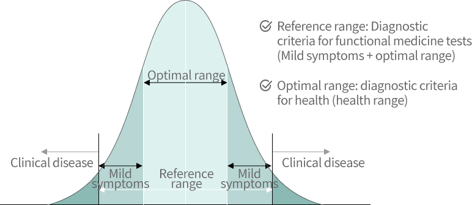
Figure 10. Reference range & optimal range of functional medicine test
Figure 10. Reference range & optimal range of functional medicine test
- Organic acid test : A snapshot of human metabolism that analyzes neurotransmitters, metabolic processes, toxin accumulation, detoxification and intestinal bacteria balance through energy metabolism and nutritional imbalance analysis.
- Salivary hormone test: Analyze chronic stress and hormonal status by measuring adrenal hormones in saliva.
- Fatty acid metabolism test: Balance analysis of fatty acids required for metabolism, including cell membrane, neurology, hormone generation, vitamin absorption, etc.
- Oxidative stress test: Evaluation of the degree of oxidative stress that causes imbalance due to overproduction of oxidizing substances in the body or lack of antioxidants by measuring the number of free radicals and antioxidant power
- Hair heavy metals and minerals test: Analysis and measurement of the degree of contamination of toxic elements such as mercury, lead, aluminum, arsenic, and cadmium and the metabolism of minerals necessary for bodily functions using hair.
- Food allergy: Measurement of IgG antibodies to foods that cause delayed-type hypersensitivity reactions that appear gradually after food intake.
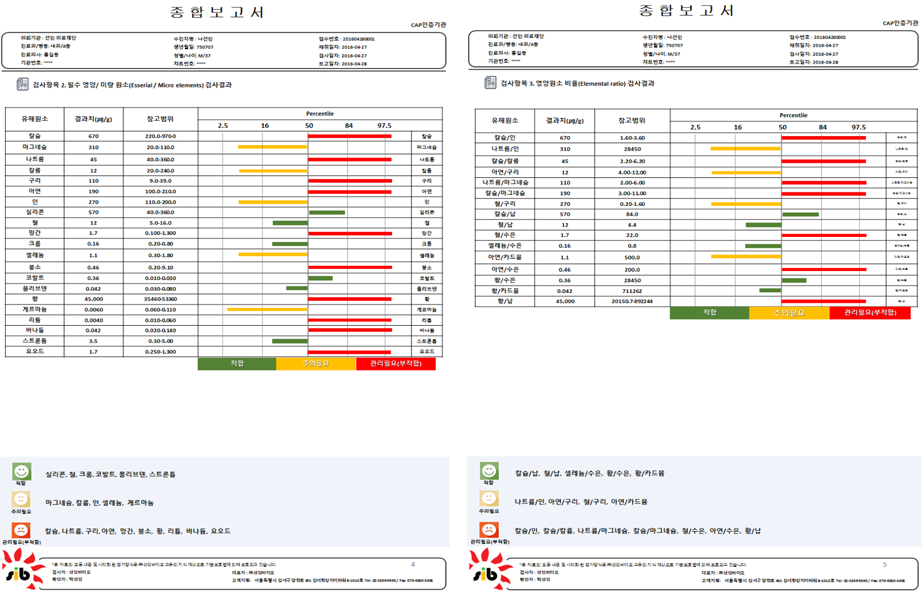
Figure 11. < Example of functional medicine test results >
Figure 11. < Example of functional medicine test results >
3.2.2 Microbiome
Microbiome is a combination of microbe, which inhabits the human body, and the biome(ecosystem). It refers to the microorganisms living in our body and their genetic information. Microbiome regulates immune function and produces various metabolites. Through research, it has been found that not only obesity, diabetes, atopy, but also cancer, autoimmune diseases, and depression are associated with the microbiome. We can perform comprehensive genetic health checkup including genetic test and microbiome test.
HEALIUM provides a service that can also test the microbiome. We provide disease risk degree and personalized dietary guidelines by testing the entire intestinal microflora at once, utilizing the latest next-generation sequencing method (NGS), one of the gene analysis technologies, and Real-Time PCR.
HEALIUM has prepared a project to check the status of intestinal microbes and changes depending to the lifestyle through the establishment of microbiome database and continuous research.
The reason other companies have recently entered the microbiome business is that research has revealed the potential of the relevant market and created several business models. According to market research firm Frost & Sullivan, the global microbiome market size is expected to increase to $108.7 billion (about 127 trillion won) in 2023.
In addition, the person-in-charge at the Biotechnology Policy Research Center said, "As the association with diseases has revealed, microbiome emerged as an innovative treatment technology," and "the technology will expand to various areas including microbiome diagnosis, treatment, and development of medicines.”
Microbiome is a more plausible term for intestinal microorganisms. Strictly speaking, microbiome can be expressed as a broader 'group of microbes' rather than intestinal microorganisms. It is called 'probiotics' as a familiar concept for us, which is known to be beneficial to our bodies. Various fruits and vegetables, known as probiotics food, are 'prebiotics'.
The concept of the connection between health and microbiome, known for a health functional food as a probiotic, is simple. It is connected to eat bacteria beneficial to our body in the form of pills or powdered food. It also means that we try eating prebiotics so that these bacteria can live well in our intestines. Furthermore, we are researching cosmetics products that contain probiotics and prebiotics.
Recently, many pharmaceutical companies are trying to develop this microbiome as a medicine. In fact, recent basic scientific research is showing the connection between the microbiome and chronic diseases, metabolic diseases, heart disease, and cancer. The research to develop and utilize the related microbiome as medicines is also underway. Of course, no drugs have been approved yet, and only a few pipelines are undergoing phase 3 research. Cube Medical will continue to conduct research to manage health with the microbiome in line with this trend.
HEALIUM provides a service that can also test the microbiome. We provide disease risk degree and personalized dietary guidelines by testing the entire intestinal microflora at once, utilizing the latest next-generation sequencing method (NGS), one of the gene analysis technologies, and Real-Time PCR.
HEALIUM has prepared a project to check the status of intestinal microbes and changes depending to the lifestyle through the establishment of microbiome database and continuous research.
The reason other companies have recently entered the microbiome business is that research has revealed the potential of the relevant market and created several business models. According to market research firm Frost & Sullivan, the global microbiome market size is expected to increase to $108.7 billion (about 127 trillion won) in 2023.
In addition, the person-in-charge at the Biotechnology Policy Research Center said, "As the association with diseases has revealed, microbiome emerged as an innovative treatment technology," and "the technology will expand to various areas including microbiome diagnosis, treatment, and development of medicines.”
Microbiome is a more plausible term for intestinal microorganisms. Strictly speaking, microbiome can be expressed as a broader 'group of microbes' rather than intestinal microorganisms. It is called 'probiotics' as a familiar concept for us, which is known to be beneficial to our bodies. Various fruits and vegetables, known as probiotics food, are 'prebiotics'.
The concept of the connection between health and microbiome, known for a health functional food as a probiotic, is simple. It is connected to eat bacteria beneficial to our body in the form of pills or powdered food. It also means that we try eating prebiotics so that these bacteria can live well in our intestines. Furthermore, we are researching cosmetics products that contain probiotics and prebiotics.
Recently, many pharmaceutical companies are trying to develop this microbiome as a medicine. In fact, recent basic scientific research is showing the connection between the microbiome and chronic diseases, metabolic diseases, heart disease, and cancer. The research to develop and utilize the related microbiome as medicines is also underway. Of course, no drugs have been approved yet, and only a few pipelines are undergoing phase 3 research. Cube Medical will continue to conduct research to manage health with the microbiome in line with this trend.
3.3 Information sharing platform
As people get more and more interested in the healthcare field, their desires for information are getting stronger. People are sharing information of many hospitals, clinics, healthcare and beauty on the existing platform. However, due to too much information, consumers are having a hard time selecting the information they are looking for. People are also sharing information thoughtlessly without verifying information and it is also difficult to obtain accurate information because advertisements that only show the advantages of a specific product or service are shared as if it were true.
We plan to provide an information sharing community of consumers within the HEALIUM platform so that they can share more accurate information with each other. Through voting and opinion participation, the reliability of information is increased, and the information provider will receive incentives by providing reliable information. We will provide a comprehensive sense of health care services, including medical, beauty, fitness, and psychological counseling by forming a network that consumers are actively participating, providing information, and gaining information.
We plan to provide an information sharing community of consumers within the HEALIUM platform so that they can share more accurate information with each other. Through voting and opinion participation, the reliability of information is increased, and the information provider will receive incentives by providing reliable information. We will provide a comprehensive sense of health care services, including medical, beauty, fitness, and psychological counseling by forming a network that consumers are actively participating, providing information, and gaining information.
4. Where to use
4.1 Genetic analysis
We plan to make it possible to for consumer to pay for our genetic analysis test with HEALIUM coins. We apply HEALIUM coin technology to HEALIUM homepage and applications to enable consumers to deposit HEALIUM coins that they purchase from external exchange and easily pay for gene analysis test. Personal genetic information is health information, and it is very sensitive information. We can store and manage genetic information more safely by using security technology of blockchain.
In addition, we recommend cosmetics, health functional foods, etc. and help people purchase them according to the results of the test. We provide services including other dietary habits and behavioral guidelines to meet the results of test in line with customers' gene health.
In addition, we recommend cosmetics, health functional foods, etc. and help people purchase them according to the results of the test. We provide services including other dietary habits and behavioral guidelines to meet the results of test in line with customers' gene health.
4.2 Use within community
We plan to create communities to share information between people interested in health care as well as gene analysis test results through HEALIUM application. People who provide information within the community receive the value evaluation for the information that other users make, and they are rewarded with HEALIUM coins. Users who participated in the evaluation also receive rewards for their opinions with HEALIUM coins.
4.3 Donation to International Association of Incurable Diseases
The International Association of Incurable Diseases is a non-profit social organization established to help patients suffering from incurable diseases have rights and hope for a better life. Korea started ‘medical expense support project for patients with rare and incurable diseases' in 2001. Support projects are underway to reduce the burden of high-cost medical expenses of people who are suffering from incurable diseases, including chronic renal failure, muscle disease, hemophilia, and Gaucher disease.
Korea added support for Crohn disease and Behcet’s disease in 2002 and multiple sclerosis and amyloidosis in 2003. Korea has been continuously expanding its support and has begun to support 133 rare incurable diseases since 2018.
HEALIUM will actively be involved in this support and will contribute generously to the International Association of Incurable Diseases.
Korea added support for Crohn disease and Behcet’s disease in 2002 and multiple sclerosis and amyloidosis in 2003. Korea has been continuously expanding its support and has begun to support 133 rare incurable diseases since 2018.
HEALIUM will actively be involved in this support and will contribute generously to the International Association of Incurable Diseases.
4.4 Collaboration with medical institutions
Doctors and experts in the field participate in the community and answer on the areas necessary for more professional information including healthcare, disease, etc., and consumers and doctors are directly connected Consumers can get professional and concrete answers, and doctors can promote hospitals to promote marketing effects.
We allow consumers to purchase products recommended within the platform and use services more conveniently from information sharing to product purchases by signing a partnership with shopping malls. We also plan to make mobile payment with HEALIUM coins when patient and hospital are matched within the platform.
We allow consumers to purchase products recommended within the platform and use services more conveniently from information sharing to product purchases by signing a partnership with shopping malls. We also plan to make mobile payment with HEALIUM coins when patient and hospital are matched within the platform.
5. HEALIUM Coin Ecosystem
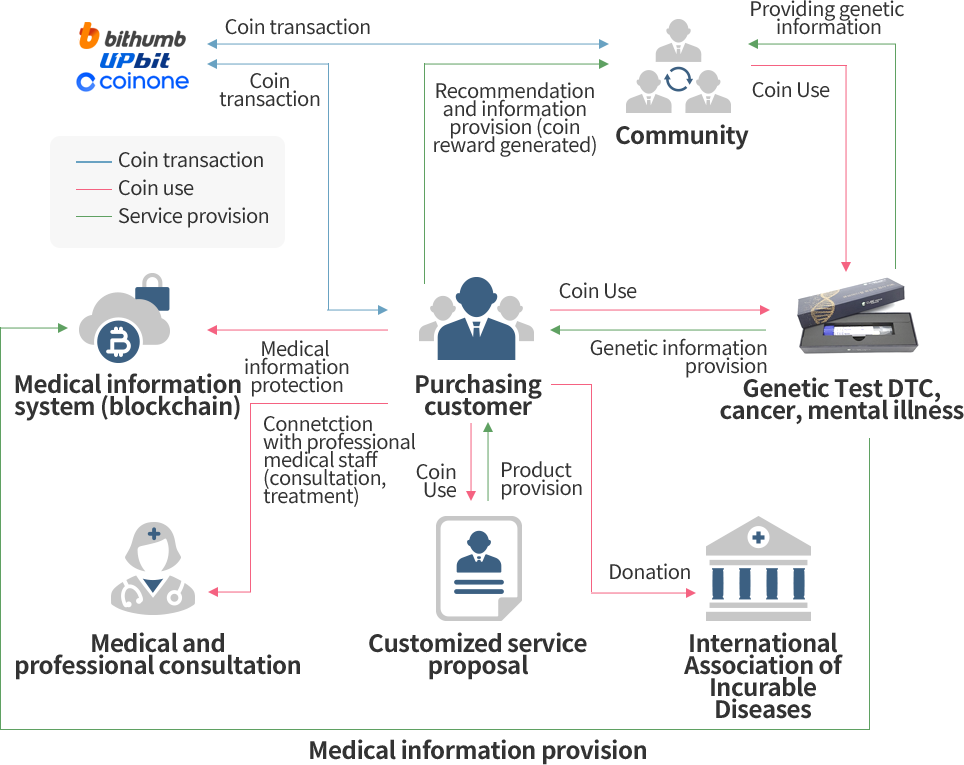
Figure 12. HEALIUM Coin Ecosystem
Figure 12. HEALIUM Coin Ecosystem
HEALIUM provides a market platform within the application by making an agreement with various product sellers. Thus, consumers can purchase personalized products that are recommended by genetic test results with HEALIUM coins in the market through HEALIUM application.
6. Metaverse project linked to health and information management system
6.1 Bio-Metaverse
The healthcare economy is closely linked to the metaverse economy in terms of future industries. Most of the future industries will come into existence and grow based on blockchain technology and big data.
So, what exactly is the Metaverse?
Metaverse is a compound word of ‘meta’ meaning virtual and transcendence and ‘universe’ meaning the real world, and it refers to a new world that is superimposed on the world we live in now.
Metaverse is often divided into four types: virtual reality (VR), augmented reality (AR), lifelogging, and mirror worlds.
The metaverse is the junction between the real and the virtual, When these two meet, it can be seen as a generic term for economic activities or certain actions. Therefore, it is appropriate to view the metaverse as a comprehensive phenomenon or concept rather than as a single technology.
The metaverse has emerged as a trend as the untact society continues and non-face-to-face basics become common after the Corona crisis, and the metaverse, which transcends time and space, is rapidly permeating into our daily life with the development of IT technology and infrastructure such as smartphones.
Then, what is the powerful medium that connects the virtual world and the real world? ‘Rider’ (delivery) and ‘virtual currency’. A rising company in that regard is a delivery-related logistics company that connects online and offline. These companies themselves become connectors that connect the online and offline worlds.
Metaverse is also foreshadowing a dramatic change in terms of the transformation of the existing currency. Currently, it is only locally distributing virtual currency corresponding to games and NFT transactions, but it is inevitably linked to the transition to digital currency that central banks of each country are attempting.
Healium (www.healium.co.kr) is providing a business model along with Bio-Metaverse to provide services for data owners and data users by applying the genome market and blockchain technology.
Therefore, those who are interested in healthcare can share information and participate as a profitable business that can be rewarded for value evaluation within the community.
So, what exactly is the Metaverse?
Metaverse is a compound word of ‘meta’ meaning virtual and transcendence and ‘universe’ meaning the real world, and it refers to a new world that is superimposed on the world we live in now.
Metaverse is often divided into four types: virtual reality (VR), augmented reality (AR), lifelogging, and mirror worlds.
The metaverse is the junction between the real and the virtual, When these two meet, it can be seen as a generic term for economic activities or certain actions. Therefore, it is appropriate to view the metaverse as a comprehensive phenomenon or concept rather than as a single technology.
The metaverse has emerged as a trend as the untact society continues and non-face-to-face basics become common after the Corona crisis, and the metaverse, which transcends time and space, is rapidly permeating into our daily life with the development of IT technology and infrastructure such as smartphones.
Then, what is the powerful medium that connects the virtual world and the real world? ‘Rider’ (delivery) and ‘virtual currency’. A rising company in that regard is a delivery-related logistics company that connects online and offline. These companies themselves become connectors that connect the online and offline worlds.
Metaverse is also foreshadowing a dramatic change in terms of the transformation of the existing currency. Currently, it is only locally distributing virtual currency corresponding to games and NFT transactions, but it is inevitably linked to the transition to digital currency that central banks of each country are attempting.
Healium (www.healium.co.kr) is providing a business model along with Bio-Metaverse to provide services for data owners and data users by applying the genome market and blockchain technology.
Therefore, those who are interested in healthcare can share information and participate as a profitable business that can be rewarded for value evaluation within the community.
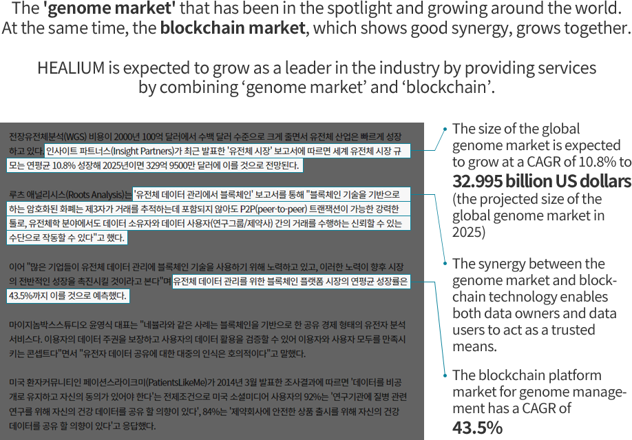
Genetic Testing Transaction Case (US company 23andMe case)
Genetic Testing Transaction Case (US company 23andMe case)
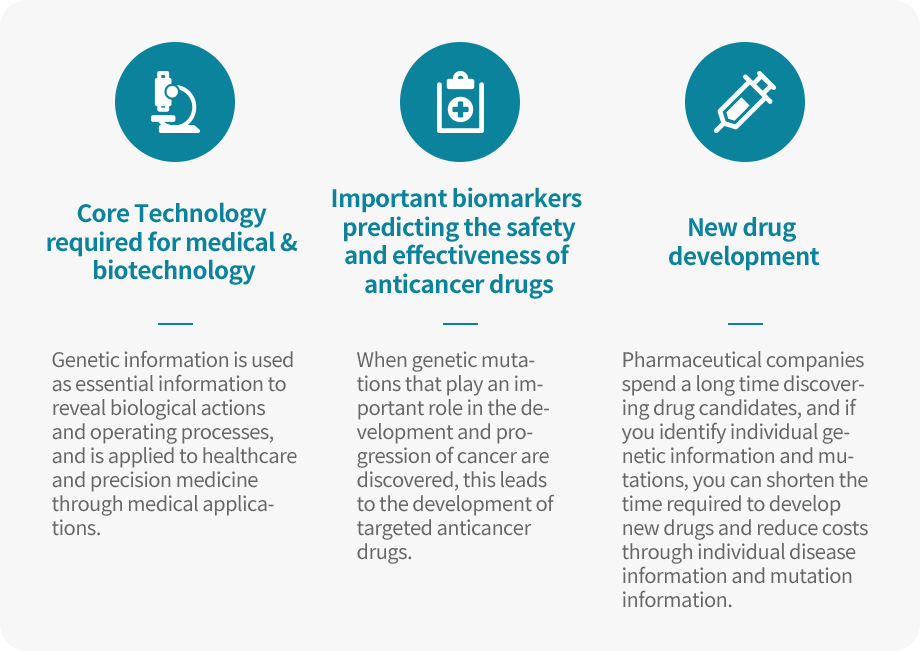
Efficacy of Genetic Testing
Efficacy of Genetic Testing
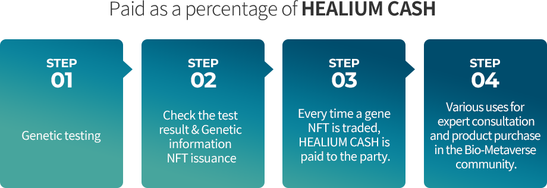
Usage of Healium Cash
Usage of Healium Cash
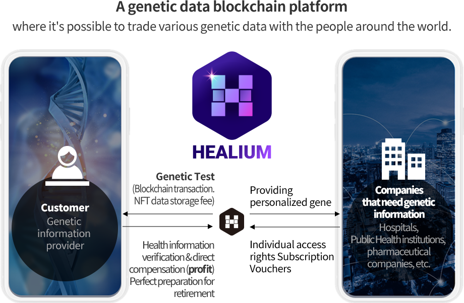
Genetic Data Blockchain Platform
Genetic Data Blockchain Platform
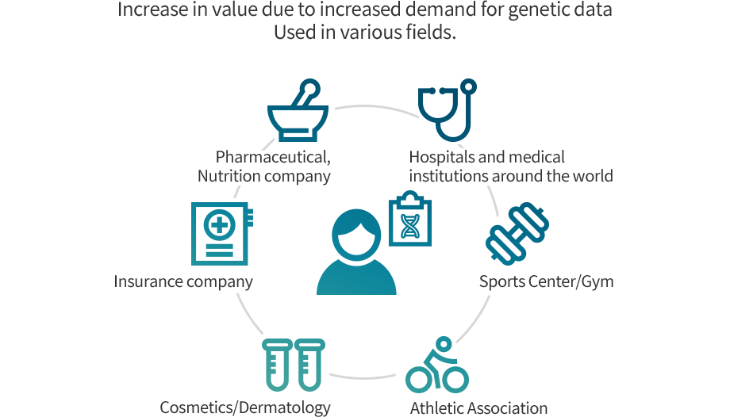
Utilization of Genetic Data
Utilization of Genetic Data
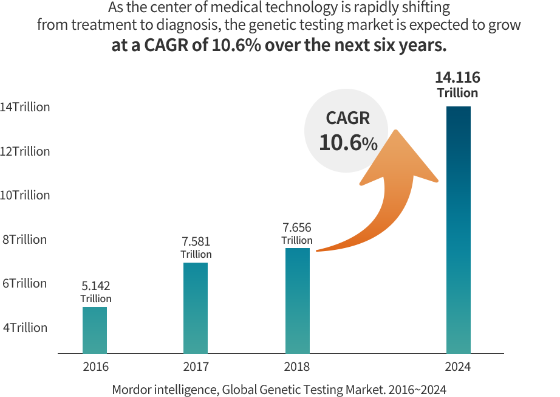
Genetic Testing Market Prospect
Genetic Testing Market Prospect
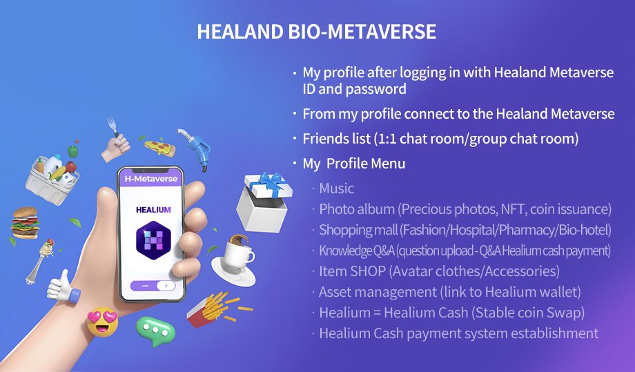
HEALAND BIO-METAVERSE
HEALAND BIO-METAVERSE
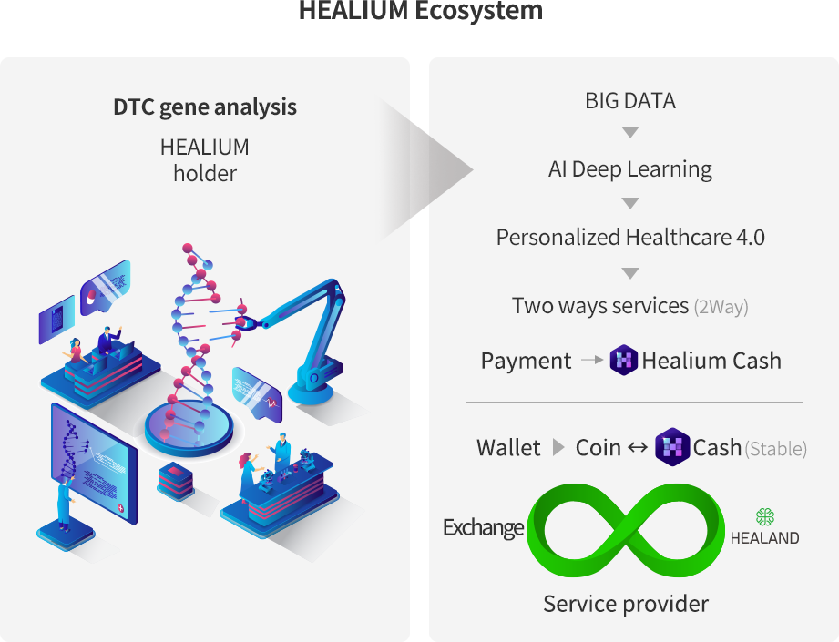
Healium Ecosystem
Healium Ecosystem
6.2 Detailed project plan
Project overview: Establishing a virtual reality world that responds to public health and health management by continuously collecting health information of the subject during childbirth and childcare
1). Register the child character you are raising on the metaverse
2). Enter the characters' real-life dietary information into the management system in the form of a parenting note
3). Real-time check of the health status of the characters based on the information entered into the system.
4). Reading the character growth process reflected in the metaverse character development system
5). Communicate notification information to characters with health problems in connection with nearby hospitals or health institutions.
1). Register the child character you are raising on the metaverse
2). Enter the characters' real-life dietary information into the management system in the form of a parenting note
3). Real-time check of the health status of the characters based on the information entered into the system.
4). Reading the character growth process reflected in the metaverse character development system
5). Communicate notification information to characters with health problems in connection with nearby hospitals or health institutions.
6.3 Expected effect
1). Providing health management tools with entertainment and fun elements to the people who need continuous health care.
2). Improving public health interest by revitalizing online culture related to health communities.
3). It has a sound public interest in the metaverse worldview that can be overly commercial or can lead to entertainment, entertainment, and speculation. And by introducing a metaverse system equipped with entertainment elements linked to games and virtual reality, it took a leading position in the metaverse business with public interest
4). Enhancing national competitiveness through continuous improvement of people's health management habits.
2). Improving public health interest by revitalizing online culture related to health communities.
3). It has a sound public interest in the metaverse worldview that can be overly commercial or can lead to entertainment, entertainment, and speculation. And by introducing a metaverse system equipped with entertainment elements linked to games and virtual reality, it took a leading position in the metaverse business with public interest
4). Enhancing national competitiveness through continuous improvement of people's health management habits.
7. HEALIUM ROAD MAP
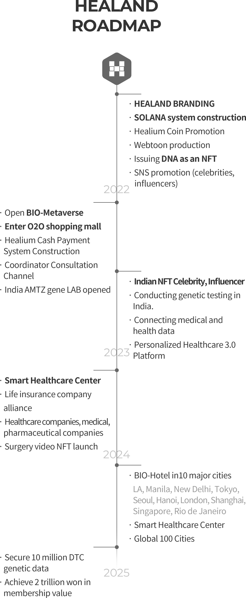Figure 14. HEALIUM ROAD MAP
8. TEAM MEMBERS
JITENDRA SHARMA
- (Current) Chairman of the Board of Directors of AMTZ, National Bio-Medical Industrial Complex of India
- (Current) Co-Chairman of Standing Committee of Medical Industrial Complex, Department of Life Sciences, India
- (Former) General Manager of LAB, WHO (World Health Organization) Geneva Headquarters
- (Area of expertise) Health care policy, Medical FOOD, health license
- Held AMTZ <WHO International Forum>
- Established AMTZ <KOREA ZONE>
SIMAR SURI
- (Current) Spokesperson of VOLUNTARY HEALTH ASSOCIATION OF INDIA (Established India's largest health and welfare foundation in 1970.
- 4,500 member companies of the Health and Medical Foundation in 27 states nationwide)
- (Current) Lawyer and secretary general of anti-smoking campaign for children
- (Current) Advisor to many Korean companies
- (Current) Advisor to AMTZ KOREA
DEVLINA CHAKRAVARTY
- (Current) Director of ARTEMIS Hospital Chain
- (A hospital chain famous for its best reputation and reliability in India)
- <Apollo Tire Group> affiliated organization
- (Current) Prime Minister Modi’s Medical Advisory Group
- (Currently) Member company of INDIA BUSINESS FORUM
- Area of expertise) Radiation therapy, hospital administration
HUE SUNGMIN
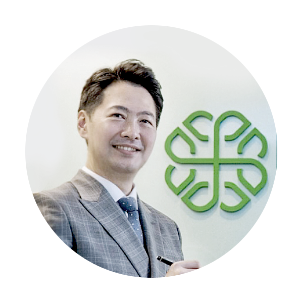
- Current) HEALAND, CEO
- Corporate education consultant
- Establishment of network business education design
- Blockchain business
- Online platform business
- Key Performance: SK Hynix, Hyundai Steel, National Diplomacy Service, LG Uplus, Univera, etc.
JEON YONGSEOK
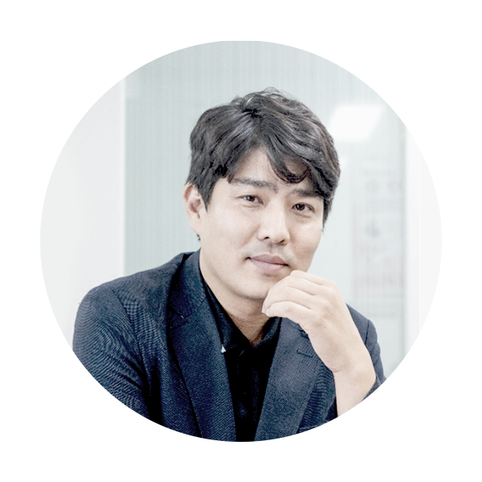
- Bachelor of Science in New Materials Engineering, Sungkyunkwan University
- Graduated from Sungkyunkwan University with a Ph.D. in Biocosmetics
- (Former) Senior Researcher, Cosmetic Research Center, Boryeong Pharmaceutical Central Laboratory
- Participating Researcher of the Institute of Technical Standards
- (Former) Senior Researcher, Kolon Life Sciences Central Laboratory, Environment Department
- bactericide-related participating researcher
- (Former) Representative of JNPBIO Co., Ltd. (Health Fermented Beverage Processing Company)
- (Current) Representative of JNP Nature Co. (Cosmetics Manufacturing, Material Manufacturing)
- 2018 2018 Venture Department Challenges 2020 Health and Welfare Department 3-year Challenges
- 2021 TIPS
CHO TAI HYONG

- Graduated from Korea University Medical School
- Master of Medicine, Graduate School of Neurosurgery, Korea University
- Doctor of Neurosurgery, Graduate School of Medicine, Korea University (MBA)
- Graduated from Korea University's Graduate School of Business Administration
- Specialist , Faculty of Medicine, Korea University
- a lecturer in neurosurgery at the University of Wisconsin M Medical School of Medicine
- Professor of Orthopedic Surgery, RUSG Medical University
- Deputy Professor of Neurosurgery, Anam Hospital, Korea University
- Professor of Neurosurgery at Korea University Anam Hospital
- Advisory Committee on the Ansan Branch of the Labor Welfare Corporation
- Health Insurance Corporation Consultant
- Court physical examination committee member
- Senior Councillor, Labor Welfare Corporation Headquarters
- teacher's insurance adviser
- SSIS Advisory Committee
- LG Fire Consultant
- Samsung Fire & Marine Consultant
KIM HEETAE
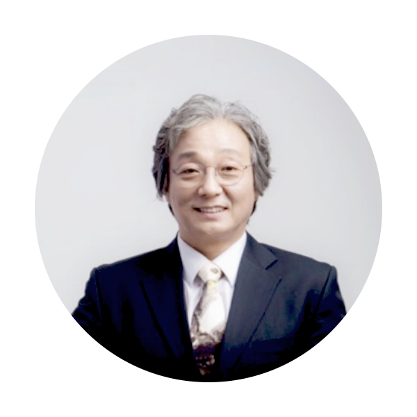
- FORMER)
Health Policy Division, Health and Welfare Bureau, Gyeonggi Provincial Government
Director of Planning and Coordination at Gyeonggi Provincial Medical Center Headquarters (six provincial hospitals affiliated with Gyeonggi Provincial Medical Center Headquarters
Served as a member of the Public Hospital Evaluation Committee of the Ministry of Health and Welfare - Current) Cube Medical CEO
- President of the International Association of Incurable Diseases
- SME Technology Development Support Project Evaluation Committee
- member of the Health Administration Society
- member of the Korean Medical Engineering Society
- Minister of Health and Welfare (Minister of Health and Welfare) Awarded No. 27400
- Minister of Government Administration and Home Affairs (Excellent management of local medical centers) No. 12037 Etc.
Jerome Choi
- Master: Sungkyunkwan University Graduate School EDPS (1997)
- PhD: Sungkyunkwan University Statistics (Yuin Univ, honor PhD (2007)
- 명예: Shepherd University Honor PhD. (2007)
- Honors: Shepherd University Honor PhD. (2007)
(Big data analysis, statistics/game lectures, and director of the affiliated big data analysis research institute) - Seoul Digital University Multimedia Department (Game Major) Dean/Professor
(Artificial intelligence, mathematics, game planning and game programming, game production, lectures, administration, research) - Gyeonggi-do Media Evaluation Committee (Big Data Field, 2017~2021)
- Midwest University e-sports game major head professor and e-sports technology research center director (2021~present)
- International Blockchain Technology Promotion Association Standing Chairman (2021~Present)
- International eSports Technology Association Technology Technology Chairman (2021 ~ present, Chairman Missouri State House of Representatives Speaker Richard West)
Ahn hoon
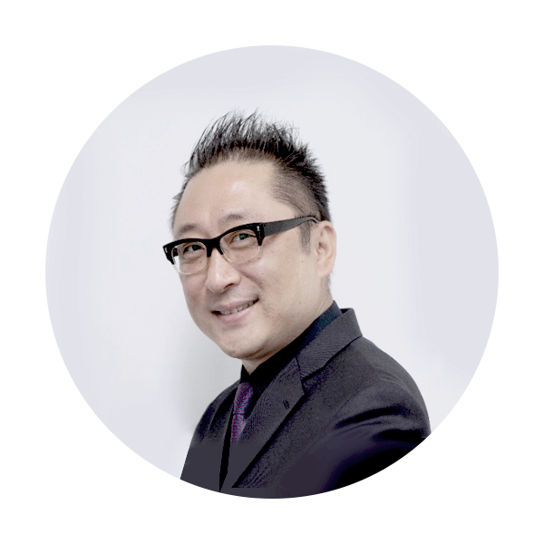
- Director of operation of Healand Co., Ltd.
- (Current) Healium Project PR Media Manager
- Bachelor of Journalism/Documentation, Department of Photography, Chung-Ang University
- (Former) Photo Correspondent for Hankyung Business, Korea Economic Daily
- (Former) Herald Economic Daily / Korea Herald photo manager
- Correspondent to the Supreme Prosecutors' Office, Correspondent to the National Assembly, Correspondent to the Blue House
- Awarded the 2007 ‘Photographer’s Award’
- Awarded the 2008 ‘Korea Press Photography Excellence Award’
- 2010 ‘Exemplary Reporter Award’
- Selected by the 2012 London Olympics Journalists Association Pool.
AHMAD SARFARAZ (Faraz)
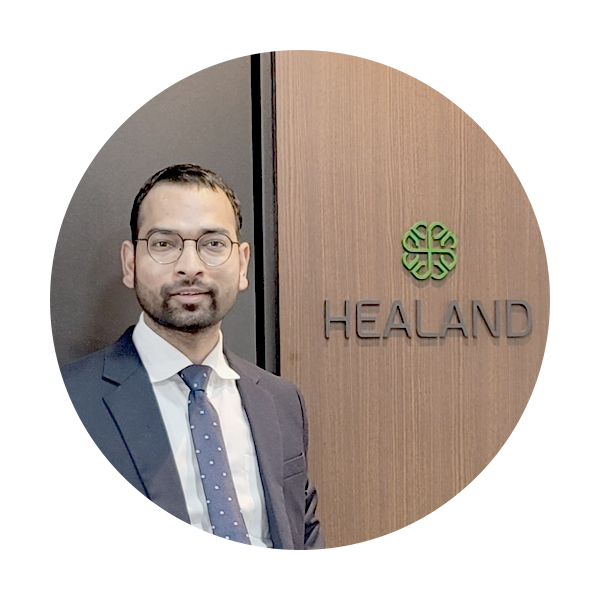
- Currently, working with global business team at Healand Co., Ltd.
- Former overseas business lead at 3C Taeyang, South Korea
- Former part time administrative assistant at KDI school of Public Policy and Management
- Former project coordinator at Development Knowledge Open Access Project (DKOA), KDI School of Public Policy and Management
- Former Monitor and auditor of Tourist Information Center at Seoul Tourism Association.
- Former volunteer and interpreter at various events organized by Korean Culture Centre in India.
- Graduated from Jawaharlal Nehru University, New Delhi, Korean Studies
- Awarded Prestigious Korean Government Scholarship for masters degree (GKS-KGSP)
- Postgraduate from KDI School of Public Policy and Management, South Korea
- Master of Development Policy, MDP (Trade and Industry Policy & Sustainable Development)
- Global Business advisor of HEALIUM in India
9. Legal Notice, Disclaimer & Limitation of Liability
This white paper only aims to deliver information, and it is not recommendation or proposal for investment, and it is just for investors' understanding, so, it is prohibited from using for other purposes.
This white paper is not a contract or agreement, so it can be changed at any time depending on the discretion of the company (including the company and affiliates, individuals, advisory members, agencies, etc., that behave on behalf of our company). In this case, the company has no obligation to notify or provide notice of any amendment, change, or revision of this white paper.
Even if we do the best efforts to accurately provide the latest information on HLMs in this white paper, we can change freely and actively the information according to the progress and development of technology without prior notice. We also do not guarantee any warranty of the appropriateness, accuracy, and completeness of the information, and are not responsible for the absence of specific information.
This white paper contains forward-looking statements such as “expectation”, “intention”, “plan”, “will”, “planning”, “goal”, “purpose”, and “can do”. It also suggests future plans through roadmaps. These forward-looking statements include known or unknown risks and uncertainties, and some incidents or the results may be quite different from the forward-looking statements included in the white paper.
The company promises to faithfully fulfill the contents of this white paper to make efforts to develop HLM, but such promises do not guarantee the inherent value of HLM, certain value or price rise, and profits. In addition, HLM is not part of our equity capital and does not have such rights and powers.
The information specified in this white paper has not been reviewed or approved by any regulatory authority, and therefore, the distribution of the white paper does not mean that the relevant laws and regulatory requirements are complied.
Cryptocurrency is not fiat currency. It has big price volatility and can be affected seriously by market conditions, government regulation, technical limits, etc. Regulators around the world are also very cautious about crypto-related businesses and operations. A related regulatory measure or investigation in this connection may affect our business and may delay or interfere with the development of our future business. Therefore, the cryptocurrency investors must decide to invest in cryptocurrency according to their own judgment, and they are responsible for their investment loss. If necessary, investors must decide their investment after consulting with experts on technology, law, finance, tax, or other issues under their responsibility.
The company do not have any responsibility for the direct or indirect losses of investors caused by the information provided in this white paper.
This white paper is not a contract or agreement, so it can be changed at any time depending on the discretion of the company (including the company and affiliates, individuals, advisory members, agencies, etc., that behave on behalf of our company). In this case, the company has no obligation to notify or provide notice of any amendment, change, or revision of this white paper.
Even if we do the best efforts to accurately provide the latest information on HLMs in this white paper, we can change freely and actively the information according to the progress and development of technology without prior notice. We also do not guarantee any warranty of the appropriateness, accuracy, and completeness of the information, and are not responsible for the absence of specific information.
This white paper contains forward-looking statements such as “expectation”, “intention”, “plan”, “will”, “planning”, “goal”, “purpose”, and “can do”. It also suggests future plans through roadmaps. These forward-looking statements include known or unknown risks and uncertainties, and some incidents or the results may be quite different from the forward-looking statements included in the white paper.
The company promises to faithfully fulfill the contents of this white paper to make efforts to develop HLM, but such promises do not guarantee the inherent value of HLM, certain value or price rise, and profits. In addition, HLM is not part of our equity capital and does not have such rights and powers.
The information specified in this white paper has not been reviewed or approved by any regulatory authority, and therefore, the distribution of the white paper does not mean that the relevant laws and regulatory requirements are complied.
Cryptocurrency is not fiat currency. It has big price volatility and can be affected seriously by market conditions, government regulation, technical limits, etc. Regulators around the world are also very cautious about crypto-related businesses and operations. A related regulatory measure or investigation in this connection may affect our business and may delay or interfere with the development of our future business. Therefore, the cryptocurrency investors must decide to invest in cryptocurrency according to their own judgment, and they are responsible for their investment loss. If necessary, investors must decide their investment after consulting with experts on technology, law, finance, tax, or other issues under their responsibility.
The company do not have any responsibility for the direct or indirect losses of investors caused by the information provided in this white paper.